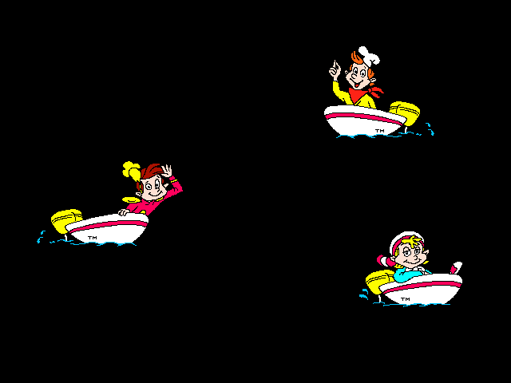
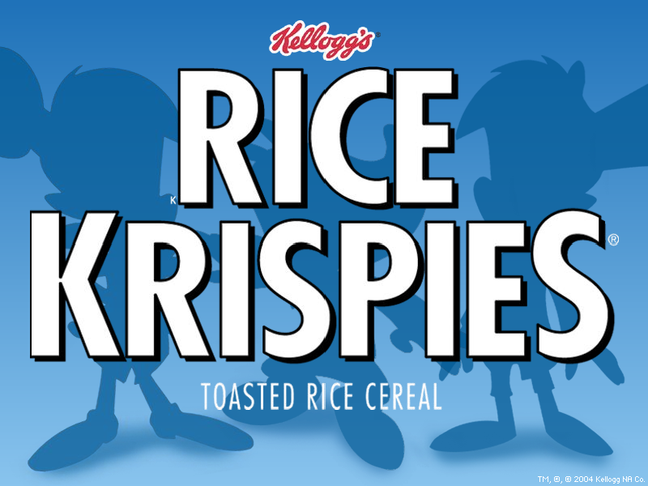

Rice Krispies Screensavers

#1

Note: This is a 16-bit program and requires special programs to run on 64-bit Windows, such as otvdm.
Note 2: This screensaver will not properly run on versions of Windows beyond Windows NT 4.0.
DOWNLOAD
 .exe file zipped (Windows) (0.99 MB)
.exe file zipped (Windows) (0.99 MB)
.hqx file (Mac OS) (483 MB)
#2

DOWNLOAD
.exe file zipped (1.34 MB)